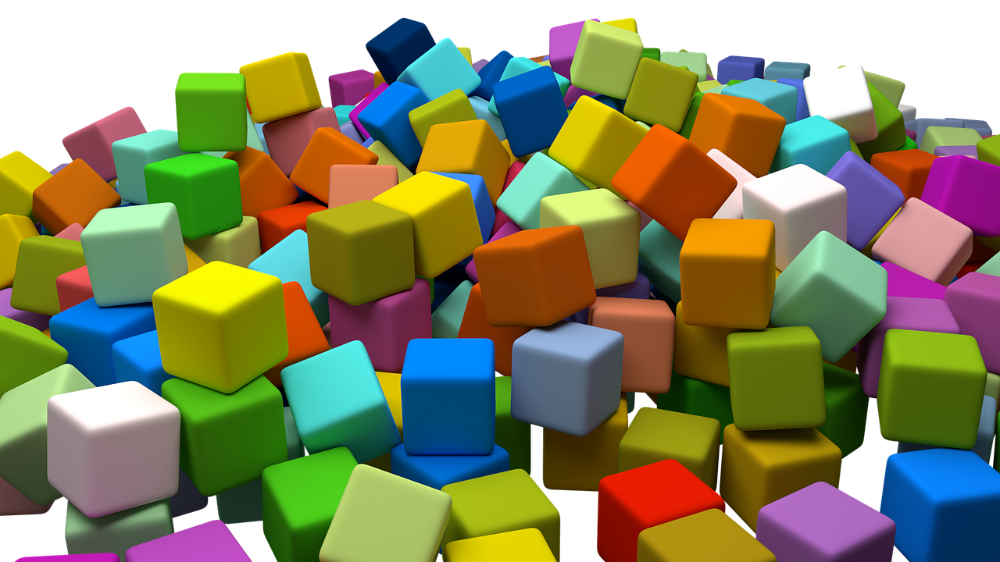

Linked Data publicatie op the Web
is een veelzijdig verhaal
- Linked Data Event Streams
- Linked Data documenten
- SPARQL endpoints
- TPF interfaces
- ...
Veelzijdigheid veroorzaakt moeilijkheden voor client-side app ontwikkelaars
-
Onderscheiden van APIs
Welk soort API is dit?
-
Bevragen van APIs
Hoe haal ik efficiënt data uit deze API?
-
Combineren van APIs
Hoe combineer ik data overheen verschillende APIs?
Queries als oplossing
SPARQL, GraphQL, ...
-
Declaratief
Queries verbergen complexiteit rond bevraging
-
Herbruikbaar
Queries hangen niet vast aan één bepaalde API
-
Generieke, herbruikbare query engines
Query engines bevatten alle complexiteit om queries op te lossen
Impliciet gebruik van nieuwe optimalisaties

- Modulair meta query engine
- Collectie van bouwblokken om Linked Data te queryen
- Specifieke engines kunnen gebouwd worden via configs

Functionaliteit van Comunica
-
Collectie van 160 modules
Met uitgebreide test suite (unit, integration, system, spec)
-
Uitvoeren van declaratieve queries
SPARQL 1.1 (100%-spec-compliant), GraphQL(-LD), ...
-
Federatie over heterogene bronnen
LDES, Linked Data documenten, SPARQL endpoints, TPF, HDT, ...
-
TypeScript/JavaScript
Uitvoerbaar lokaal op machines en in Web browsers
Te gebruiken door iedereen
Ontwikkelingsstrategie loopt tegen limieten aan
-
Ontwikkeling binnen IDLab
Focus op onderzoek
-
Vraag om nieuwe features en oplossen van bugs
Geen directe link met onderzoek
-
Ontwikkeling breder maken dan IDLab
→ Comunica Association
Doelen van Comunica Association
-
Non-profit organisatie
Lidmaatschap van bedrijven, organisaties, onderzoekers, ...
-
Toekomstgericht
Bepalen van de roadmap op lange termijn
-
Onderhoud van Comunica
Implementatie van features, oplossen van bugs, ...
Conclusies
-
Toekomstige apps zullen query-gedreven zijn
Verbergen van complexiteit rond Linked Data publicatie methoden
-
Comunica is een herbruikbare query engine
Neemt al deze complexiteiten op zich
-
Association zal Comunica duurzaam maken
Open voor iedereen: https://comunica.dev/association/